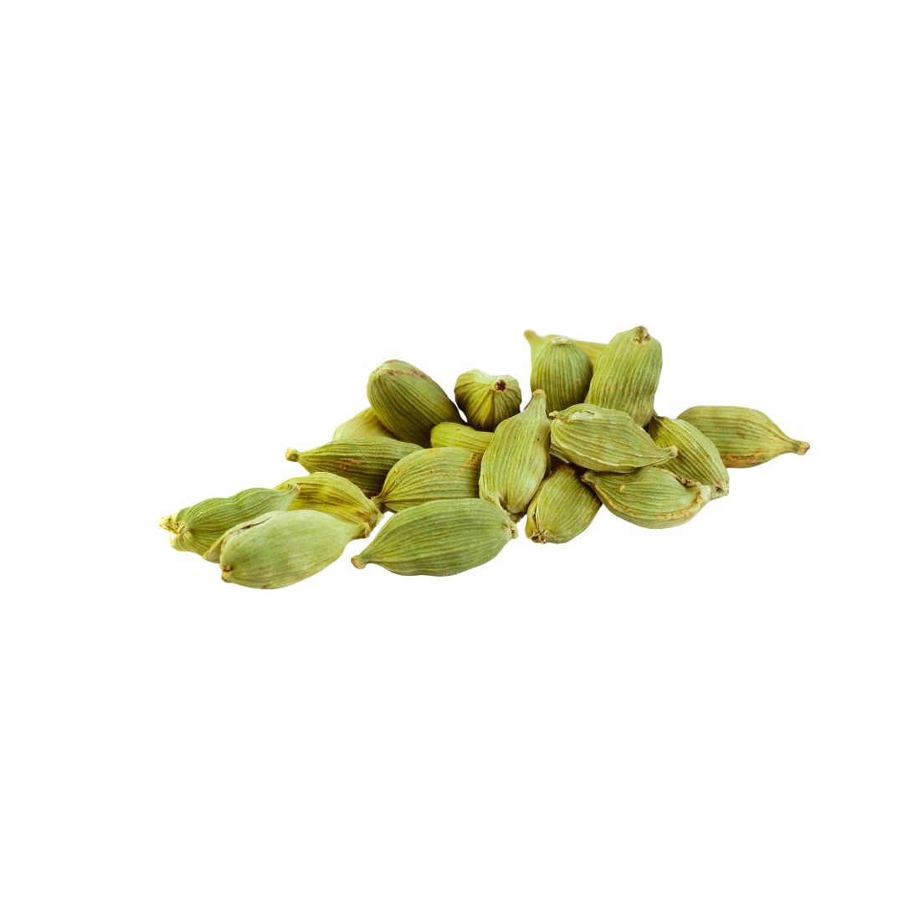

We are certified Ceylon Cardamom suppliers from Sri Lanka, exporting premium green cardamom pods with intense aroma and high essential oil content to the EU, USA, and 40+ countries worldwide — serving culinary, wellness, and fragrance industries.
Harvested in the cool central highlands, our Ceylon Cardamom is cherished for its fresh, floral aroma and natural essential oil content. Each pod is sun-dried and hand-sorted for purity, ensuring the highest quality for your culinary and wellness applications.
Sri Lanka – Central Province
Whole Green Pods
Fresh · Sweet · Citrus-woody undertones
Curry · Tea · Baking · Ayurvedic Wellness

Unlike mass-produced cardamom, our Sri Lankan green pods are grown under shade, slowly matured, and carefully harvested for peak essential oil retention.
Each pod is naturally sun-dried to preserve essential oils and aroma, ensuring vibrant flavor and rich aroma perfect for high-end culinary applications.
Our zero-chemical, fair-trade process ensures a pure, planet-friendly product from farm to jar, supporting sustainable agriculture in Sri Lanka.
Every pod is hand-sorted for purity and quality, ensuring only the finest cardamom reaches our customers worldwide.
Traditionally used to ease bloating, gas, and indigestion in Ayurvedic medicine.
Add a pod or two to tea for a rich, aromatic flavor and soothing effect.
Perfect in desserts, curries, and baked goods – especially in Middle Eastern and South Asian cuisine.
Our cardamom is sourced from smallholder farms following ethical and organic cultivation methods. Your purchase supports sustainable agriculture in Sri Lanka.
Organic
Vegan
Gluten-Free
Fair Trade
| Botanical Name | Elettaria cardamomum |
| Origin | Central Highlands, Sri Lanka |
| Form | Whole Green Pods |
| Oil Content | > 3% |
| Moisture | < 10% |
| Packaging | 50g | 100g | 500g | 1kg |
| Shelf Life | 24 months |